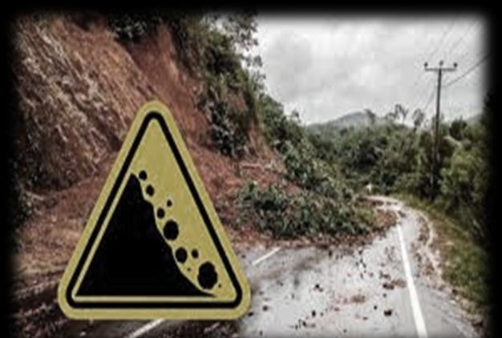
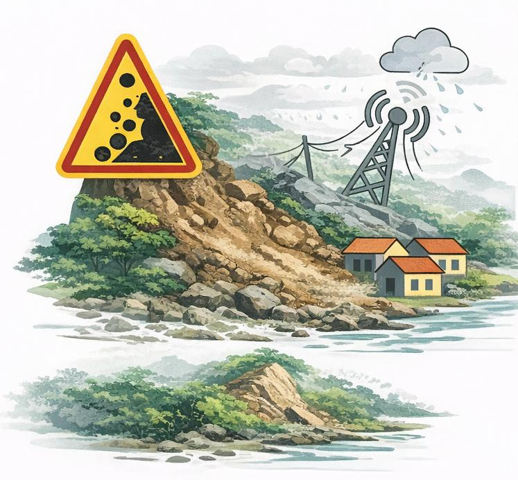
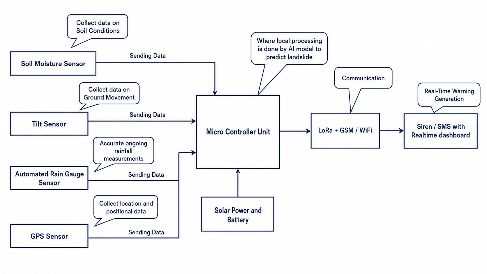
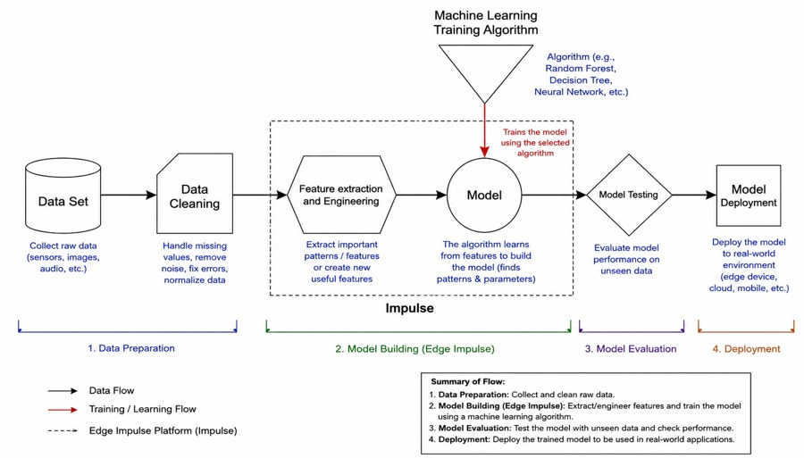
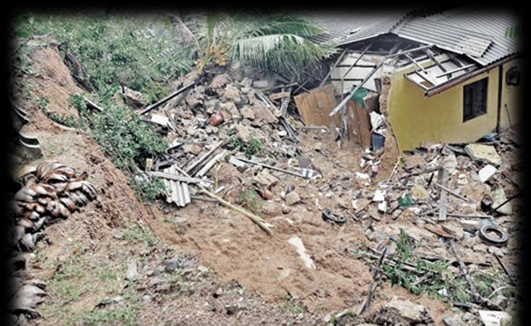

1
Severe consequences
Landslides can cause deaths, property damage and infrastructure destruction.
The project responds to limitations in coverage, connectivity and response time by combining multiple field signals with edge-based AI processing.
Landslides are among the common natural hazards affecting Sri Lanka, especially in hilly areas with high rainfall such as Badulla, Nuwara Eliya and Kegalle. Heavy rainfall, soil saturation and slope instability are highlighted in the project presentation as major contributors.
Because landslides can lead to loss of life, property damage and environmental destruction, continuous monitoring and faster warning delivery are central to the research motivation.

The presentation identifies four practical limitations in current monitoring approaches.
Landslides can cause deaths, property damage and infrastructure destruction.
Existing monitoring systems are not available in every vulnerable area.
Poor mobile or internet coverage can delay warning messages.
Continuous human observation is impractical and unreliable for real-time detection.
The proposed direction therefore prioritizes local processing, multi-sensor inputs and an affordable, deployable field system.

The project combines sensing, automated rainfall drainage, on-device AI, location awareness, remote monitoring and community warnings.
Design and develop an IoT-based landslide early detection system that uses Edge AI and automated rainfall monitoring to support reliable, timely landslide risk alerts in Sri Lanka.
To design a sensor-based monitoring system that collects rainfall, soil moisture, vibration, and ground-tilt data relevant to landslide risk.
To develop an automated rainfall monitoring unit capable of measuring rainfall and automatically draining collected water using an electronically controlled solenoid valve.
To develop and deploy a machine-learning model using Edge Impulse for classifying landslide risk based on sensor inputs.
To perform Edge AI inference directly on an ESP32 so that preliminary risk classification can be carried out locally.
To integrate GPS information with the monitoring system in order to associate sensor readings and warning events with the monitored location.
To use GSM communication and Firebase Realtime Database for storing and remotely viewing live and historical monitoring data.
To implement LoRa-based long-range communication for transmitting dangerous-condition alerts to a separate community alarm unit.
To evaluate the functionality of the integrated prototype by testing sensor acquisition, AI prediction, rainfall communication, GPS, LoRa warning transmission, automated drainage, and Firebase data uploading.
The source presentation compares the proposed design with four earlier research examples.
| Criteria | Lee et al. (2020) | Yao et al. (2021) | Caracciolo et al. (2022) | Bhavana & Sagar (2025) | Proposed System |
|---|---|---|---|---|---|
| Data processing | Cloud-based ML | Cloud-based ML | Cloud-based ML | Cloud-based ML | Edge AI on ESP32 |
| Automated rainfall measurement | No | No | No | No | Yes |
| Real-time operation | Limited | Limited | Limited | Limited | Yes |
| Deployment | Complex & costly | Complex & costly | Complex & costly | Complex & costly | Low-cost & easily deployable |
Note: the presentation provides author/year labels but not full bibliography details. Full reference titles should be added when the client supplies the final research references.
Soil moisture, tilt/ground movement, rainfall and GPS data are collected by field sensors and sent to the main controller. Edge AI performs local prediction, while communication through LoRa / GSM / Wi-Fi supports monitoring and alert delivery.
The system architecture also includes solar power and battery support for field operation.

The presentation shows a workflow that moves from dataset preparation and data cleaning into feature extraction/engineering, model training, model testing and final deployment.
Random Forest and k-Nearest Neighbors were both implemented and tested; the Random Forest model was selected as the final model.
See AI resultsThe supplied machine-learning training diagram distinguishes the data flow, learning flow and Edge Impulse model-building stage. It complements the existing system architecture and Edge Impulse illustration above.

Collect sensor observations, handle missing values, remove noise and normalize data where appropriate.
Extract or engineer features and train the classification model with Edge Impulse.
Check model performance using unseen test data before deployment.
Deploy the trained model for local ESP32 inference and integrate the results into the alert pipeline.
Heavy or prolonged rainfall can increase water infiltration and soil saturation, contributing to slope instability. Soil moisture, vibration and ground tilt provide complementary indicators of changing ground conditions. These measurements help the prototype classify risk but do not guarantee that a landslide will be detected or predicted.
Sri Lankan highland locations, including Nuwara Eliya, Badulla and Kegalle, are relevant to the hazard context. The National Building Research Organisation (NBRO) provides landslide hazard zonation work; site-specific risk decisions should use official guidance alongside field data.
Relevant background research includes rainfall-triggered landslides in Nuwara Eliya [6], landslide hazard potential in Hanguranketha [5] and NBRO hazard mapping [10].

References [1]–[13] supplied for this research project. Entries without a verified direct URL are provided as citations rather than guessed links.